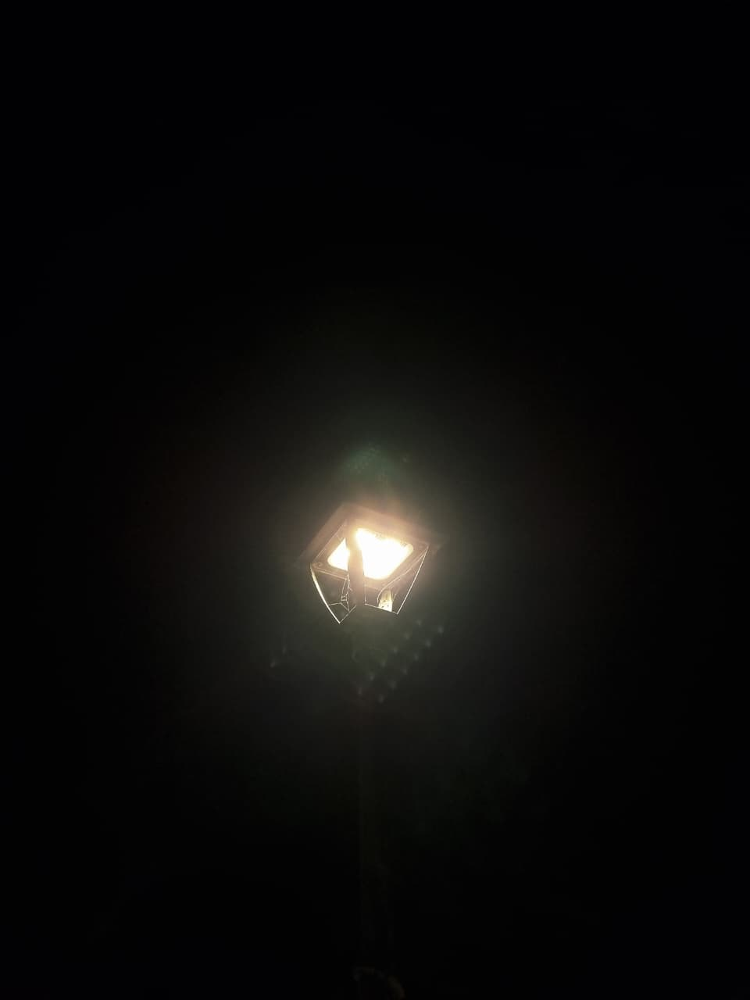
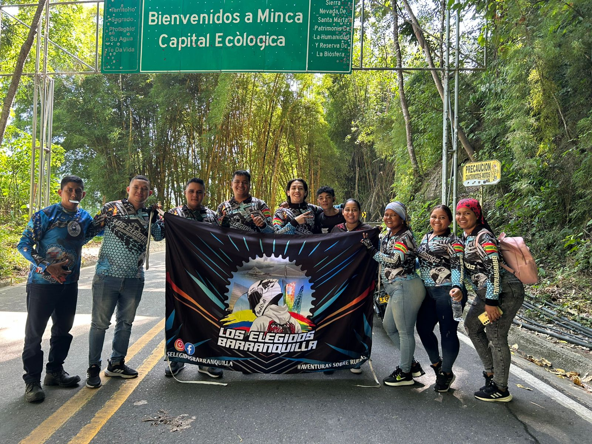
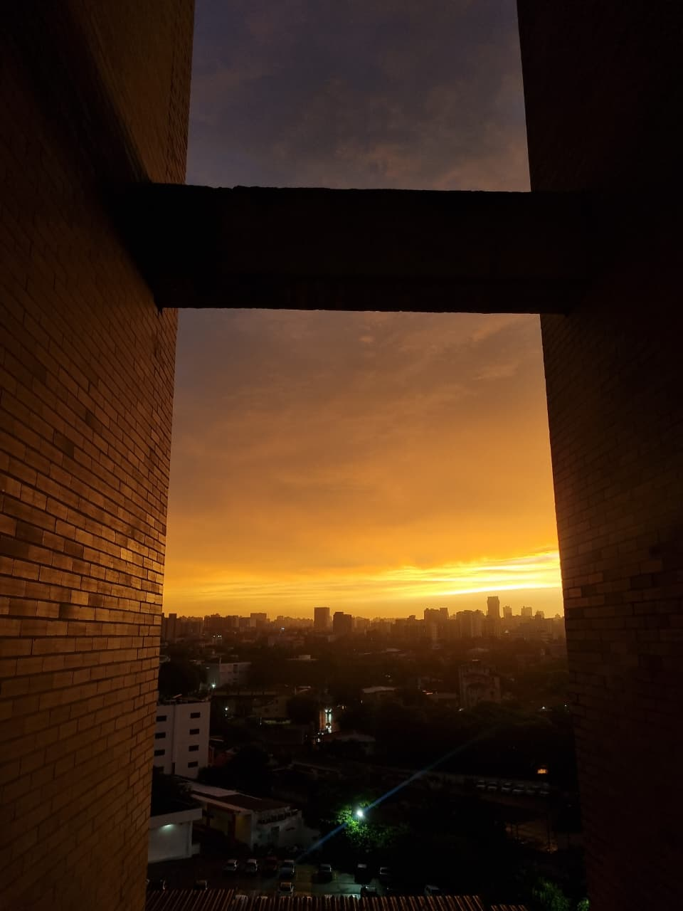

Soy Emmanuel Monroy, estudiante de Ingeniería de Sistemas y un apasionado por la tecnología, la programación y el aprendizaje constante.
Me interesa el desarrollo de software, la inteligencia artificial y la creación de proyectos que puedan resolver problemas reales.
También disfruto aprender idiomas, especialmente inglés, y me motiva mejorar cada día para crecer tanto en lo personal como en lo profesional.
Entre mis metas está convertirme en un programador sólido, emprender mis propios proyectos y aportar soluciones innovadoras en el campo de la tecnología.
Me llamo Emmanuel Monroy y estudio Ingeniería de Sistemas. Siempre me ha gustado todo lo que tenga que ver con tecnología, aprender cosas nuevas y meterle mano a la programación. Soy curioso y me gusta encontrarle la vuelta a los problemas, así sea complicado. También estoy enfocado en seguir creciendo como programador y lograr que mis proyectos tengan un impacto real.
Fuera del estudio, disfruto bastante montar en moto, porque me da una sensación de libertad tremenda, y jugar videojuegos, que es una de mis formas favoritas de pasar el rato y relajarme.
Como dice un dicho motero: la vida es mejor en dos ruedas
.
Esas dos cosas, junto con la tecnología, hacen parte de lo que soy y de lo que me motiva cada día.
Según mi propia experiencia:
Montar en moto no es solo un pasatiempo, es una forma de vida. Es sentir el aire, la libertad y la emoción de que cada kilómetro es una nueva historia que contar.
Aquí muestro algunas cosas que me representan:
  | Materia | Día | Hora |
|---|---|---|
| Arquitectura en la Nube | Sábado | 09:30 - 12:30 |
| Herramientas para el Análisis, Procesamiento de Datos | Lunes | 10:00 - 13:00 |
| Desarrollo Web | Lunes | 13:00 - 16:30 |
| Suficiencia Segundo Idioma III | Martes | 14:00 - 17:00 |
| Laboratorio Star Up | Martes | 09:30 - 12:30 |
| Datalabs | Jueves | 18:30 - 21:30 |
| Suficiencia Segundo Idioma III | Viernes | 10:30 - 13:30 |
Bueno en esta seccion voy a poner mi top 3 canciones para su deleite.